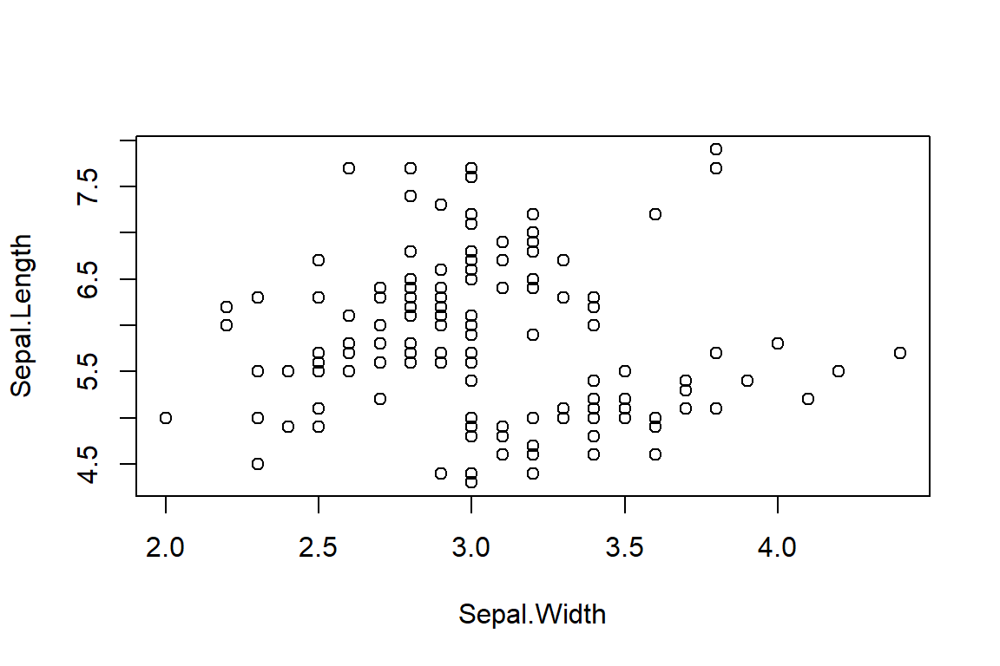
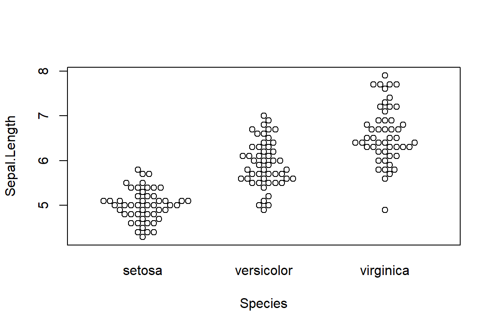
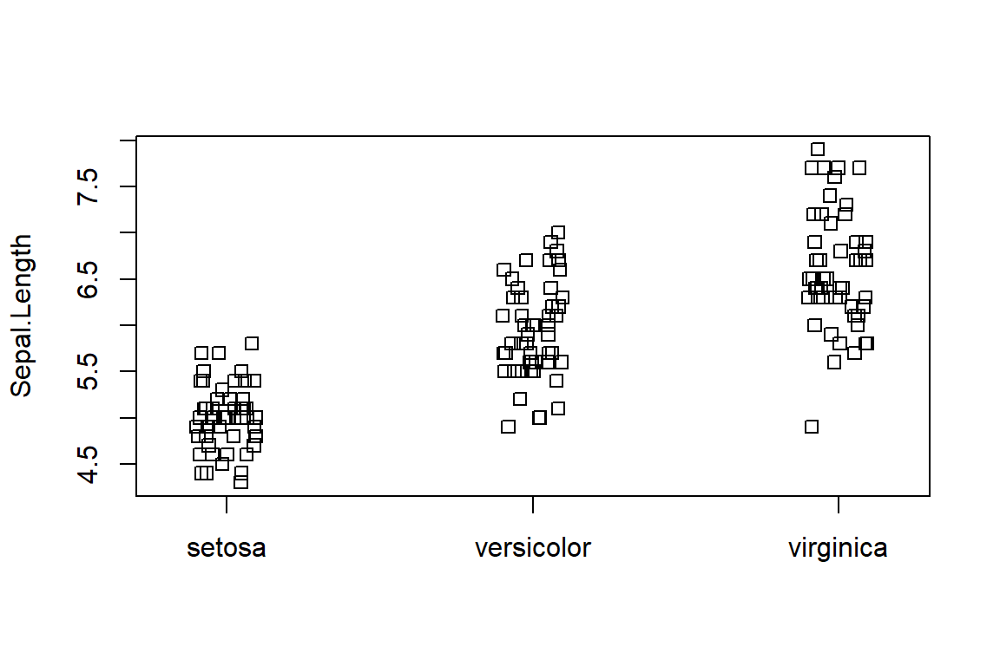
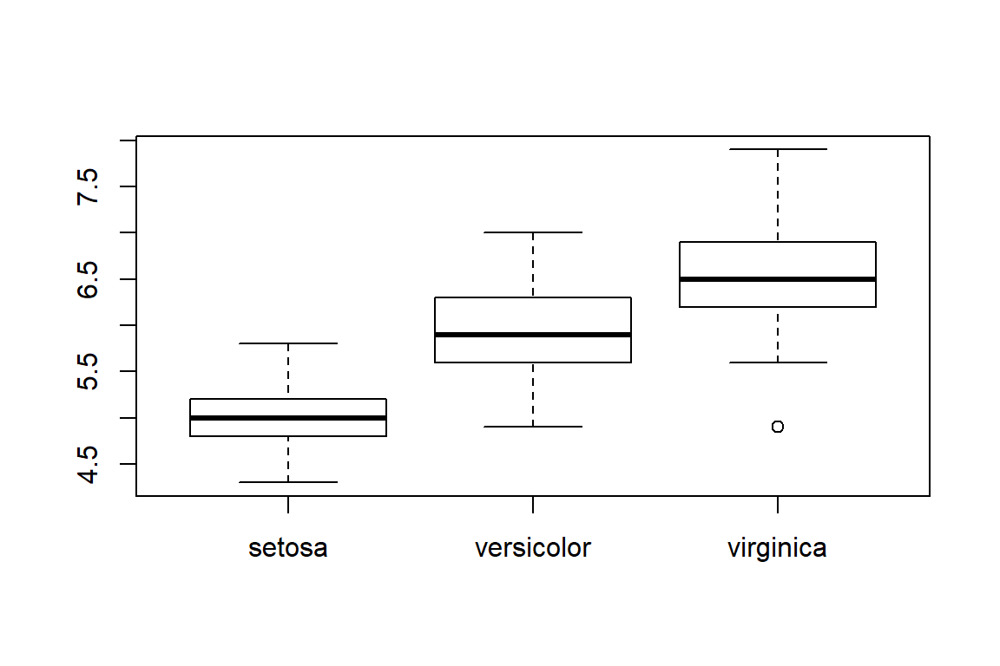
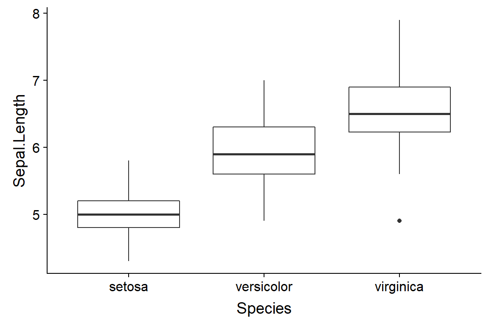
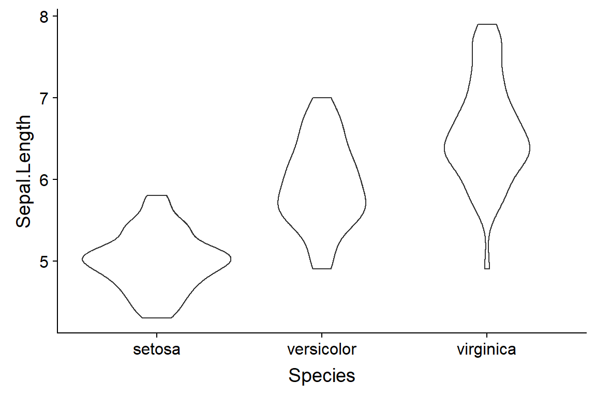

Chapter 4 “Graphing Continous Data”
Commentary
Vocabulary
Motulsky vocab
- Arithmetic mean
- Bias
- Box-and-wisker plot (boxplot)
- Continous data
- Dotplot (or scatter plot) (or beeswarm)
- Error
- Frequency distribution
- Histogram
- Interquartile range
- Mean
- Median
- Mode
- Outlier
- Percentile
- Quartile
- Precision
- Smoothed data
- Trimmed mean
- Violin plot
Additional vocab
Key functions
- boxplot
- beeswarm::beeswarm
- stripplot
Chapter Notes
4.1 “Continuous Data”
Ecological examples of contiunous data include: the mass of a lizard, the volume of bird feces, the length of a spider appendage, the height of a tree.
Lab biology example of continuous data include: the concentration of protein in solution, the intensity of a band on a gel, the molecular weight of different salt ions.
4.2 “The Mean and Median”
- Median: Medians are useful because the provide a better idea of the center of a distribution even if there are outliers or skew. Medians are very useful to think about and plot in your graphs, but suprisingly rarely comes into play for actual statistical calculations. This is because the math related to medians causes problems; means are much easier to work with. The field of (robust statistics)[https://en.wikipedia.org/wiki/Robust_statistics] frequently works with medians. Quantile regression is one method that works particularly with medians.
- The geometric mean: good to know about but results are rarely presented in terms of geometric means. (An exception in ecology is stochastic demography.)
- Harmonic mean: like the geometric mean, results are rarely presented this way.
- Trimmed mean: not currently use much in biology, but potentially used. Discussion of robust statistics sometimes include trimmed means.
- Mode: Like the median, useful to think about but rarely used in statistic computation.
4.3 “Lingo: Terms used to Explain Variability”
4.3.1 “Biological variability”
4.3.2 “Precision”
[?? do I agree with this way of framing things]
4.3.3 “Bias”
4.3.4 “Accuracy”
4.3.5 “Error”
4.4 “Percentiles”
4.5 “Graphing Data to Show Variation”
4.5.1 “Scatter plots”
Scatter plots often refer to plots used when you have two numeric variables, like this 
What Motulsky shows in Figure 7.1 is sometimes now called a beeswarm plot, a name I like. They can be made in R using the beeswarm package.
beeswarm(Sepal.Length ~ Species,
data = iris)
A similar type of plot is a stripchart. These work best when they are set up to not have their points overlapping, which is called jittering.
stripchart(Sepal.Length ~ Species,
data = iris,
vertical = TRUE,
method="jitter")
A beeswarm plot is basically a jitter stripchart that has been well organized. And has a cooler name.
4.5.2 “Box-and-whiskers plots”
Usually just called a boxplot.
In base R they are made with the boxplot() command.
boxplot(Sepal.Length ~ Species,
data = iris,
vertical = TRUE,
method="jitter")
In ggplot they can be made like this with the qplot() function
qplot(data = iris,
y = Sepal.Length,
x = Species,
geom = "boxplot")
Or directly with ggplot() using geom_boxplot()
ggplot(data = iris,
aes(y = Sepal.Length,
x = Species)) +
geom_boxplot()
4.5.3 “Violin plots”
Violin plot can be useful when you want more information than given by a boxplot but have too much data for a beeswarm. There’s a package in R which implements violin plots for basic R graphics. In ggplot you use geom_violin().
ggplot(data = iris,
aes(y = Sepal.Length,
x = Species)) +
geom_violin()
4.6 “Graphing Distributions”
4.6.1 “Frequency distributions”
4.6.2 “Cumulative frequency distribution” (OPTIONAL)
Good to know about but not applicable to most entry-level stats.
4.7 “Beware of Data Massage”
4.7.1 “Beware of filtering out impossible values”
4.7.2 “Beware of adjusting data”
4.7.3 “Beware of smoothing”
4.7.4 “Beware of variable that are the ratio of two measurements”
4.7.5 “Beware of normalized data”
Beware of ratios of ratios
Certo, et al. 2018. Divided We Fall: How Ratios Undermine Research in Strategic Management http://journals.sagepub.com/doi/abs/10.1177/1094428118773455
Curran-Everett, D. 2013. Explorations in statistics: the analysis of ratios and normalized data. Advances in Physiology Education.
Motulsky doesn’t mention this. It can be a problem, though. Some papers related to this topic:
Karp et al. 2012. The fallacy of ratio correction to address confounding factors. Laboratory Animals 46: 245–252.
Koch et al. 2015. Overcoming problems with the use of ratios as continuous characters for phylogenetic analyses. Zoologica Scripta.